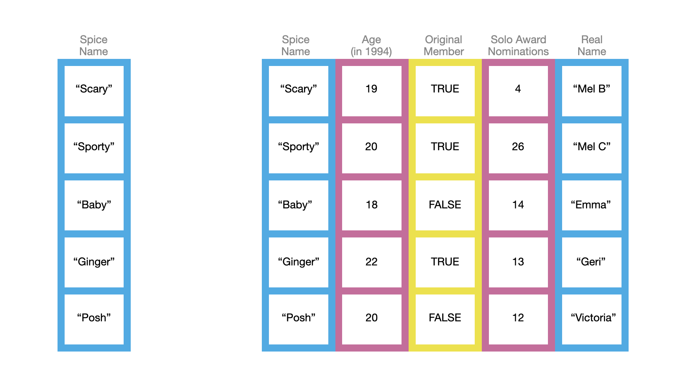
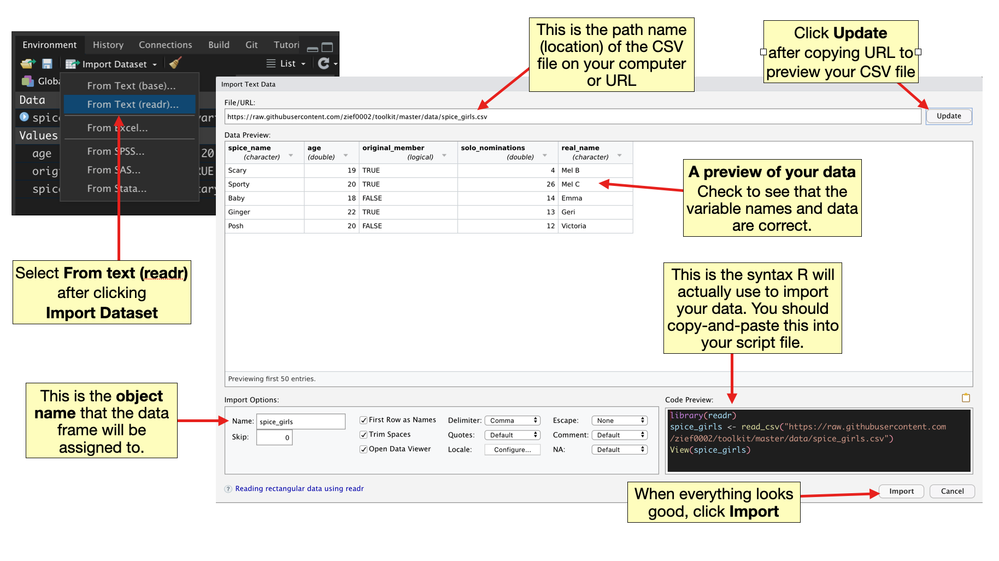
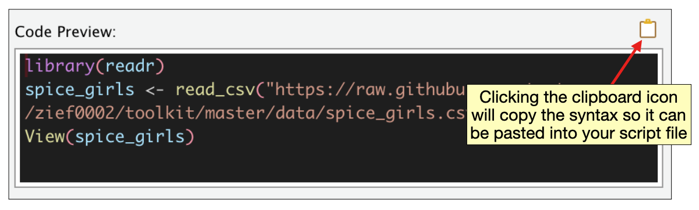

3 Data Structures in R
In this chapter, you will be learn about two common data structures that are used in the R statistical computing environment: vectors and data frames. You will also learn about particular types (or classes) of vectors, namely numeric, character, and logical vectors.
One way to think about vectors and data frames is to use the metaphor of bookcases. Vectors are single column bookcases and data frames are multi-column bookcases.1
Similar to real bookcases, the bookcases in our metaphor can be used to store things. In our metaphorical bookcases, we will store data values. Note that in the picture, the color of the bookcase is constant within each column. This indicates that, unlike real bookcases, whatever type of data we store in a column of our metaphorical bookcase will have to be homogeneous. For example, we cannot store numeric values and character strings (e.g., names) within the same column without consequences.2

3.1 Vectors
Vectors (the single-column bookcases in our metaphor) are perhaps the most common data structure you will encounter in R. In fact, even the data frame is composed of vectors; each column is a vector. There are many ways to create a vector in R, in fact you have already been introduced to a couple of them: seq() and rep(). These are useful to create sequences of values and vectors with repeated values, respectively. But what if you wanted to create the vector of the Spice Girls’ ages when the band was formed in 1994 (the values in the second column in the picture above)?
To create a vector of these ages, we can use the c() function to input each of the five ages. Within this function, each age is separated by a comma—each input is a separate argument to the c() function. We will also assign this to an object called age.
# Create age vector
age = c(19, 20, 18, 22, 20)
# View vector
age[1] 19 20 18 22 20Note that once we assign create age it shows up in our global environment. In the technical language of R, each age is an element of the vector. All of the elements in the age vector are numeric values. This is the vector’s type.3 Lastly, there are five elements in the vector.
Once you have created a numeric vector, you can compute on it. For example in the syntax below we compute the mean age, the standard deviation of the ages, and count the elements in the vector.
# Compute mean
mean(age)[1] 19.8# Compute standard deviation
sd(age)[1] 1.48324# Count elements
length(age)[1] 53.1.1 Logical Vectors
Another common vector type you will encounter is the logical vector. Each element in a logical vector is either TRUE or FALSE (all uppercase letters). You could use the c() function to create a logical vector. For example, to create the original_member vector we could use the following syntax:
# Create logical vector
original_member = c(TRUE, TRUE, FALSE, TRUE, FALSE)
# View vector
original_member[1] TRUE TRUE FALSE TRUE FALSEIt is more common to create logical vectors through computation using logical operators. For example we might ask which elements of the age object are greater than 20.
# Which elements of age > 20
age > 20[1] FALSE FALSE FALSE TRUE FALSEThe result of using the logical operator > is a logical vector. There are several logical operators in addition to >:
# greater than or equal to 20
age >= 20[1] FALSE TRUE FALSE TRUE TRUE# less than 20
age < 20[1] TRUE FALSE TRUE FALSE FALSE# less than or equal to 20
age <= 20[1] TRUE TRUE TRUE FALSE TRUE# equal to 20
age == 20[1] FALSE TRUE FALSE FALSE TRUE# not equal to 20
age != 20[1] TRUE FALSE TRUE TRUE FALSENote that the logical operator for “equal to” is two equals signs. This is because = (one equal sign) is what we use for assignment . If you wrote age=20 you would be assigning the value 20 to age, not asking whether the elements in age are equal to 20!
Logical elements have numeric values associated with them, namely,
FALSE= 0; andTRUE= 1.
This means we can apply computations to a logical vector. For example, we could count the number of Spice Girls that were original members by summing the logical values in the original_members object. (Since all FALSE values are 0, this amounts to counting the number of TRUE values.)
# Count original members
sum(original_member)[1] 3We could also count the number of Spice Girls who are under the age of 20.
# Count members with age < 20
sum(age < 20)[1] 23.1.2 Character Vectors
A third type of vector you will work with is a character vector. Character vectors (a.k.a., strings, literals) are vectors in which each element is a string of characters delimited by quotation marks. For example, the Spice names column is a character vector. We can again create this vector using the c() function.
# Create character vector
spice = c("Scary", "Sporty", "Baby", "Ginger", "Posh")
# View vector
spice[1] "Scary" "Sporty" "Baby" "Ginger" "Posh" Many computations that worked on numeric vectors do not work on character vectors. These will often return an error or unexpected result. In the syntax below, for example, we are told that the mean() function expects a numeric or logical vector, and since what we used was not either of those, the result returned was NA.
# Find mean name
mean(spice)Warning in mean.default(spice): argument is not numeric or logical: returning
NA[1] NASome computations work the same way.
# Count the number of elements
length(spice)[1] 53.2 Data Frames
Data frames (the multi-column bookcases in our metaphor) are a more complex data structures than vectors. There are again, multiple ways to create a data frame in R. We will examine two methods for creating a data frame: using the data.frame() function and importing data from a spreadsheet or CSV file.
To create a data frame from scratch, using R, we can use the data.frame() function. Each argument to this function is a named vector that will correspond to a column within the data frame, and each argument (vector) is separated by commas. For example, to create the Spice Girls data frame from our example, we could use the following syntax:
# Create data frame
spice_girls = data.frame(
spice = c("Scary", "Sporty", "Baby", "Ginger", "Posh"),
age = c(19, 20, 18, 22, 20),
original_member = c(TRUE, TRUE, FALSE, TRUE, FALSE),
solo_nominations = c(4, 26, 14, 13, 12),
real_name = c("Mel B", "Mel C", "Emma", "Geri", "Victoria")
)
# View data frame
spice_girlsNote that we also assigned the data frame to an object called spice_girls so we can compute on it. You will learn how to compute on data frames in the chapters Data Wrangling with dplyr and Plotting with ggplot2.
3.3 Importing Data From a CSV File
In professional practice, you will often enter data into a spreadsheet and rather than typing it into R. When you save this work, many spreadsheet programs use a proprietary format for saving the information (e.g., Excel saves as a XLSX file; Google Sheets saves as a GSHEET file). These often include extraneous information (e.g., formatting) that is irrelevant to the raw data. While R includes libraries and functions that can import data in the XLSX and GSHEETS formats, it is generally easier to save or export your data to a CSV (comma separated value) file from within your spreadsheet program prior to importing it into R.

Here are some tips for entering data into a spreadsheet:
- The first row should be the variable names. Do not use spaces in variable names.
- Character strings should be entered without quotation marks in a spreadsheet.
- If you have missing data, leave the cell blank.
For more tips on entering data, see Broman & Woo (2018).
Once your data are saved as a CSV file, it can be easily imported into R. To do so,
- Click the
Import Datasetbutton under theEnvironmenttab in RStudio and choose “From Text (readr)”. - If the CSV file is a file stored on your computer, click the
Browsebutton and navigate to where you saved your CSV file, select the file, and click “Open”. If the CSV file is hosted on the web, type the URL into the “File/URL” text box and click “Update”.
3.3.1 Importing the Spice Girls Data
The file spice-girls.csv is accessible at https://raw.githubusercontent.com/zief0002/toolkit/master/data/spice_girls.csv.
- Copy and paste that URL into the “File/URL” text box.
- Click the “Update” button.
Clicking “Update” will open a preview of your data. Check to be sure the variable names are correct and that the data looks like what you entered into your spreadsheet.
- Change the text in the
namebox to correspond to the object name you want to use in R. - Finally, click the
Importbutton to import your data.
After importing the data you should see the object in your global environment.

3.3.2 Importing Data Using a Script File
Even though you used the Import button—a point-and-click feature in RStudio—to import the data, behind the scenes, syntax was generated that was actually used to import the data into R. When we selected “From Text (readr)”, the read_csv() function from the {readr} package was used to import the data. You can see the syntax generated in the Code Preview window after you selected your CSV file.

In the first line of syntax, the {readr} package is loaded using the library() function. The data is imported in the second line of syntax and assigned to an object, in this case spice_girls. The read_csv() function includes an unnamed argument providing the URL for the CSV file.4 The View() function in the third line of syntax simply opens the spice_girls object in a view tab in RStudio.
It is a good idea to copy the first two lines of syntax from the Code Preview window into your script file. It will be faster to import the data in the future by running it from a script file rather than trying to reproduce all the steps to import your data. The third line of syntax, using View(), is not essential to importing your data..
Since there are better ways to actually “see” the contents of the data object (e.g., print()), you should not include the View() syntax line in your script file.
Below are the two lines I would include in the script file. I would also comment them.
# Load readr library
library(readr)
# Import data
spice_girls <- read_csv("https://raw.githubusercontent.com/zief0002/toolkit/master/data/spice_girls.csv")The syntax <- is another way to write the assignment operator. You can use either = or <- for the assignment operator. Whichever you choose, be consistent!
3.4 Validity Check on Imported Data
Once you import data, you should always perform a validity check to ensure that the entire dataset was imported and that things look OK. There are several functions that are useful for this examination. Three that I use regularly are print(), glimpse() and summary().
The print() function gives us a quick look at the data.
# View data
print(spice_girls)# A tibble: 5 × 5
spice_name age original_member solo_nominations real_name
<chr> <dbl> <lgl> <dbl> <chr>
1 Scary 19 TRUE 4 Mel B
2 Sporty 20 TRUE 26 Mel C
3 Baby 18 FALSE 14 Emma
4 Ginger 22 TRUE 13 Geri
5 Posh 20 FALSE 12 Victoria Note that from this output we can see that the read_csv() function actually imports the data as a tibble. Tibbles are essentially the same data structure as data frames. The only difference is that when you use print() (and some other functions) to examine the data object, what is printed to the screen is slightly different.5 For tibbles,
- The number of rows and columns is displayed;
- The first 10 rows are shown;
- Only the columns that fit on screen are printed; and
- Each column type is reported
Here the size of the data object is 5 x 5, which indicates that there are five rows (first value) and five columns (second value). We are also informed which columns are numeric, which are logical, and which are character.6
The summary() function computes summary statistics for each column in the data object. Different measures are computed depending on the column type. For character columns, only the length of the column is computed. The count of TRUE and FALSE values are computed for logical columns, and several measures are computed for numeric columns.
# Compute summary measures for each column
summary(spice_girls) spice_name age original_member solo_nominations
Length:5 Min. :18.0 Mode :logical Min. : 4.0
Class :character 1st Qu.:19.0 FALSE:2 1st Qu.:12.0
Mode :character Median :20.0 TRUE :3 Median :13.0
Mean :19.8 Mean :13.8
3rd Qu.:20.0 3rd Qu.:14.0
Max. :22.0 Max. :26.0
real_name
Length:5
Class :character
Mode :character
This is another good validity check to ensure that numeric columns have appropriate minimum and maximum values, etc. Here we see that the the age and solo_nominations columns have reasonable values. In practice you would undertake many more validity checks, but for now this is a good start.
References
Broman, K. W., & Woo, K. H. (2018). Data organization in spreadsheets. The American Statistician, 72(1), 2–10. https://doi.org/10.1080/00031305.2017.1375989
Technically, a data frame can have a single column, but in practice most data frames you encounter will have many columns.↩︎
In this case, everything in the column would be turned into a character string.↩︎
The technical type is “double”, which is commonly referred to as numeric.↩︎
This argument for the
read_csv()function can also be a pathname to the location of the CSV file on your computer. If you are computing on a Mac, you may need to add~/to the beginning of this path name.↩︎For data frames only the first six rows are displayed, all the columns are printed regardless of size, and column type is not reported.↩︎
Note that just typing the name of the data frame also allows you to view the data. However, using print allows us more flexibility when the data set is larger.↩︎